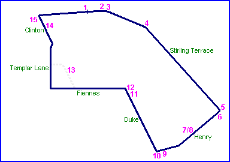
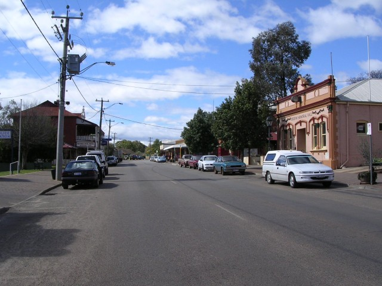
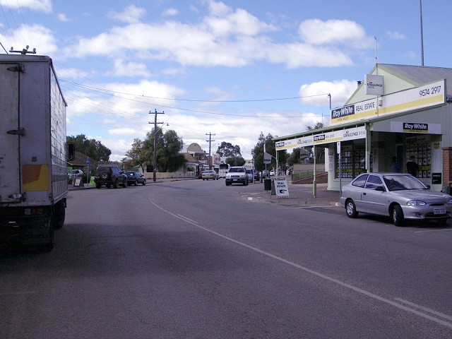
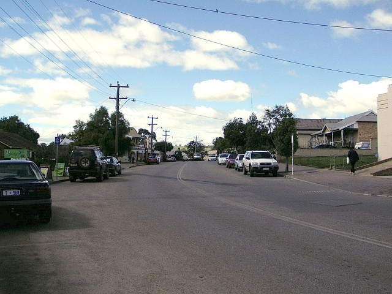
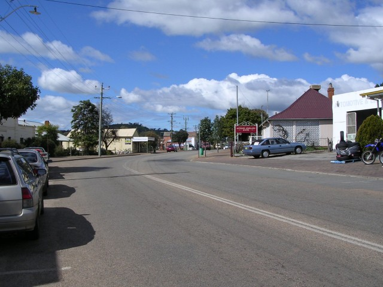
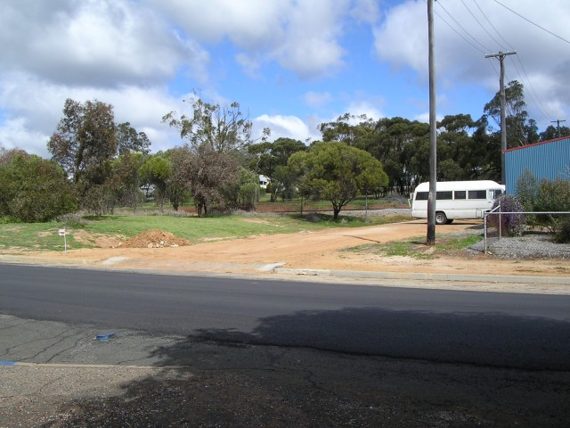
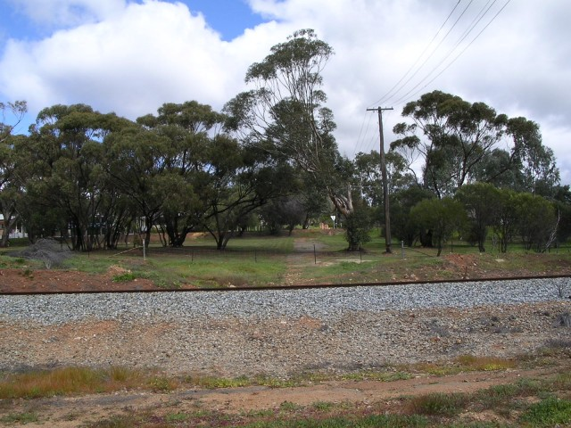
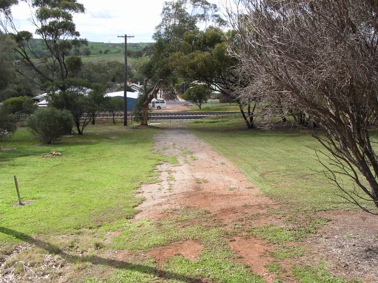
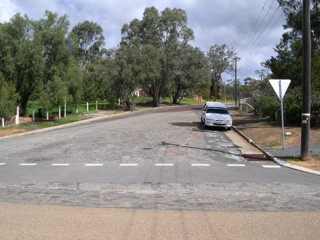

Toodyay - Stirling Tce. to Henry St.
|| Contents || Stirling Tce / Henry St | Duke St / Fiennes St / Clinton St || Home ||

Numbers on the map represent the location where the photographs were taken. Scroll
down to view the photographs.
Return to racingcircuits.net's Photo Archive Main Index

1 - Start area on Stirling Tce. Looking in the direction of travel.

2 - First kink on Stirling Tce.

3 - Stirling Tce.

4 - Second kink on Stirling Tce.

5 - The lower part of Henry Street is no longer in use.

6 - Henry Street cut by Standard gauge railway line [Sydney to Perth]

7 - Looking down Henry Street back to Stirling Tce.

8 - 180° from last shot
Photographs and Text ©Neil Fackerell. Reproduced here with kind permission.